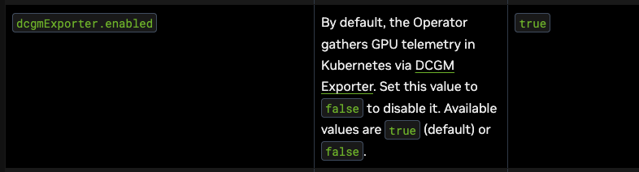

Monitoring HPE GreenLake Servers running GPU using Grafana and Prometheus
Overview
HPE GreenLake provides a cloud-native platform for managing and monitoring infrastructure with built-in tools and dashboards. While GreenLake offers comprehensive native monitoring capabilities, organizations can also leverage the GreenLake API to integrate with popular open-source tools like Grafana and Prometheus. This approach enables teams to consolidate monitoring data across hybrid environments, utilize existing observability workflows, and create customized dashboards tailored to specific operational needs.
Kubernetes and Helm Setup
Kubernetes cluster setup
This demonstration environment utilizes a high-availability Kubernetes cluster consisting of three control plane nodes and two worker nodes,
wsl=> k get node -o wide
NAME STATUS ROLES AGE VERSION INTERNAL-IP EXTERNAL-IP OS-IMAGE KERNEL-VERSION CONTAINER-RUNTIME
c2-cp-01.hst.enablement.local Ready control-plane 80d v1.32.5 10.16.160.51 <none> Ubuntu 22.04.5 LTS 5.15.0-144-generic containerd://2.0.5
c2-cp-02.hst.enablement.local Ready control-plane 80d v1.32.5 10.16.160.52 <none> Ubuntu 22.04.5 LTS 5.15.0-144-generic containerd://2.0.5
c2-cp-03.hst.enablement.local Ready control-plane 80d v1.32.5 10.16.160.53 <none> Ubuntu 22.04.5 LTS 5.15.0-144-generic containerd://2.0.5
c2-worker-01.hst.enablement.local Ready <none> 80d v1.32.5 10.16.160.54 <none> Ubuntu 22.04.5 LTS 5.15.0-144-generic containerd://2.0.5
c2-worker-02.hst.enablement.local Ready <none> 80d v1.32.5 10.16.160.55 <none> Ubuntu 22.04.5 LTS 5.15.0-144-generic containerd://2.0.5
Kubernetes namespace setup
The cluster is equipped with the gpu-operator namespace for NVIDIA GPU management and the monitoring namespace hosting the Prometheus stack, with external access enabled via NodePort services.
wsl=> kubectl get ns | grep -vE '^(kube-|default)'
NAME STATUS AGE
gpu-operator Active 80d
monitoring Active 56d
wsl=> k get svc -n gpu-operator
NAME TYPE CLUSTER-IP EXTERNAL-IP PORT(S) AGE
gpu-operator ClusterIP 10.233.44.80 <none> 8080/TCP 78d
nvidia-dcgm-exporter ClusterIP 10.233.15.59 <none> 9400/TCP 78d
wsl=> k get svc --field-selector spec.type=NodePort -n monitoring
NAME TYPE CLUSTER-IP EXTERNAL-IP PORT(S) AGE
kube-prometheus-stack-grafana NodePort 10.233.22.241 <none> 80:30080/TCP 56d
kube-prometheus-stack-prometheus NodePort 10.233.8.106 <none> 9090:30090/TCP,8080:30398/TCP 56d
Helm chart installation
The environment uses Helm to manage two key components: the NVIDIA GPU Operator for GPU resource management and the Kube Prometheus Stack for monitoring and observability.
wsl=> helm list -A
NAME NAMESPACE REVISION UPDATED STATUS CHART APP VERSION
gpu-operator-1753140595 gpu-operator 4 2025-08-14 19:20:42.329819669 -0700 MST deployed gpu-operator-v25.3.2 v25.3.2
kube-prometheus-stack monitoring 5 2025-08-15 13:06:31.169338089 -0700 MST deployed kube-prometheus-stack-76.3.
0 v0.84.1
GPU Operator chart customization
The NVIDIA GPU Operator Helm chart deploys a DCGM (Data Center GPU Manager) exporter by default, but there are important nuances:
-
The DCGM exporter Pod will be created automatically when the operator detects a node with an NVIDIA GPU and the dcgm-exporter component is enabled in its values.
-
In the stock gpu-operator Helm chart from NVIDIA's repo, the DCGM exporter is enabled by default (
dcgmExporter.enabled: true). This is from Nvidia GPU Operator Documentation. https://docs.nvidia.com/datacenter/cloud-native/gpu-operator/latest/getting-started.html#operator-install-guide 
However:
- ServiceMonitor is not enabled by default.
- This means Prometheus won't automatically scrape the DCGM exporter unless you either:
- Enable the ServiceMonitor (
dcgmExporter.serviceMonitor.enabled: true), or - Manually define a scrape config in Prometheus.
- Enable the ServiceMonitor (
The gpu-operator is configured with custom values to enable Prometheus integration. The DCGM exporter runs as a ClusterIP service with ServiceMonitor enabled for automatic metrics discovery by Prometheus.
wsl=> helm get values gpu-operator-1753140595 -n gpu-operator
USER-SUPPLIED VALUES:
dcgmExporter:
service:
type: ClusterIP
serviceMonitor:
enabled: true
GPU utilization simulation
To simulate GPU load and verify monitoring functionality, we deployed a test pod running the gpu-burn utility. This tool performs intensive GPU computations, allowing us to observe GPU utilization metrics in our monitoring dashboards.
The following YAML manifest creates a pod that clones the gpu-burn repository, compiles it, and runs continuous GPU stress testing:
apiVersion: v1
kind: Pod
metadata:
name: gpu-burn
spec:
containers:
- name: gpu-burn
image: nvidia/cuda:12.2.0-devel-ubuntu22.04
command: ["/bin/bash", "-c"]
args:
- |
apt update && apt install -y git build-essential && \
git clone https://github.com/wilicc/gpu-burn.git && \
cd gpu-burn && make && ./gpu_burn 999999
resources:
limits:
nvidia.com/gpu: 1
restartPolicy: Never
Key configuration details:
- Base image: nvidia/cuda:12.2.0-devel-ubuntu22.04 provides the CUDA development environment
- GPU allocation: nvidia.com/gpu: 1 requests a single GPU from the cluster
- Runtime: gpu_burn 999999 runs for approximately 277 hours (effectively continuous)
- Restart policy: Never ensures the pod completes its run without automatic restarts
Deploy the pod using: